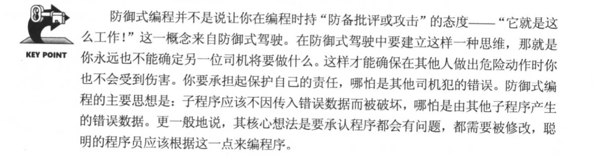
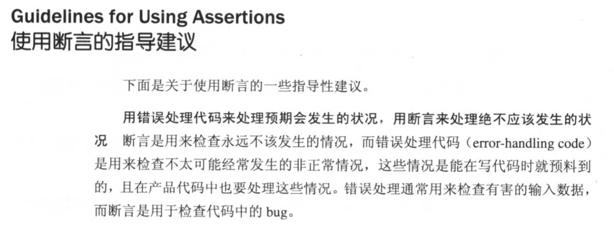
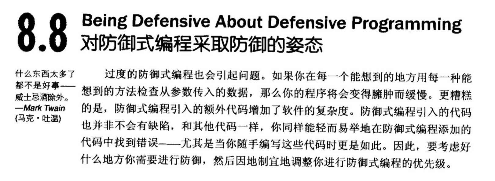
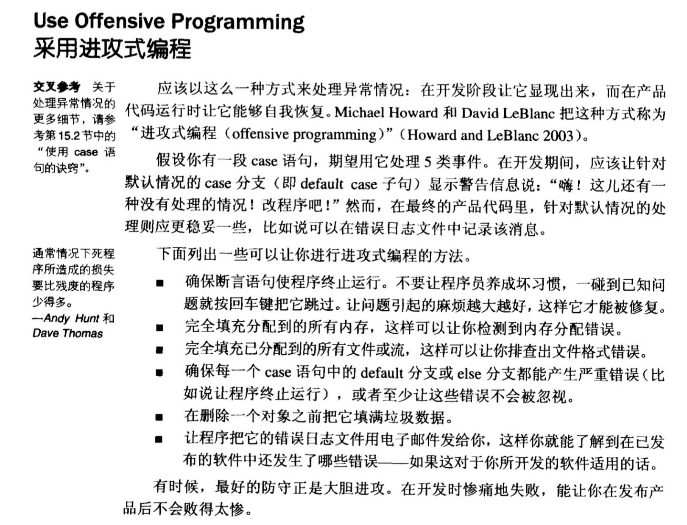

背景
事情的来由还要从几十几亿年前的一次星球大爆炸说起，sorry，背错台词了，是从几天前讨论接口返回数据和几个月前讨论课件本地数据结构说起，简单的说，就是碰到约定好的内容出现异常，是我们在程序中内部作兼容处理，还是抛出去。
打个比方，我们要解析一段json，约定这个json的格式，只能是正常格式，或者是空，那么一旦返回json的方法返回了一个『既不是正常格式，又不是空的异常值』，程序该如何处理呢？
小花：一旦碰到约定异常，程序必须兼容处理，一定不能让程序Crash
小Fa：一旦碰到约定异常，就必须抛出去，告知约定有误，找出具体错误原因
这个问题，相信只要是程序猿基本都遇到过，举个最常见的栗子，NullPointerException，假如我们要从json中取一个字段，突然发现发生了NullPointerException，一些开发者认为是数据问题，那么把json中的这个字段改正确就行了；还有一些开发者认为是程序问题，认为程序需要做非空判断，再去使用。我相信这两种程序猿都有自己的理由，第一种程序简洁明了，代码逻辑干净，但一旦出错，就会崩溃，第二种程序耐操，随你数据怎么错，我都能不Crash，但代码中到处存在非空判断，臃肿、重复。
生存还是毁灭，这是一个问题！
防御式编程
就在我们为了这个问题而争论的时候，突然有一个姓康的同事，施法祭出了一块砖头（《代码大全2》，近900页，相当于3本《Android群英传》），我一度以为他想砸在我的脸上，正当我准备闪避的时候，他翻到了这块砖头的第八章，几个大字赫然印入了我的视线——『防御式编程』。

果然是老司机，居然可以从防御性驾驶中悟出防御性编程，说好的编程不开车，开车不编程呢？
这位作者编程厉不厉害我不知道，但我知道，论开车，一定没有何老师diao！
OK，《代码大全》给我们提供了一个定义——『防御式编程』，说白了，就是『人类都是不安全、不值得信任的，所有的人，都会犯错误，而你写的代码，应该考虑到所有可能发生的错误，让你的程序不会因为他人的错误而发生错误』
在书中，作者告诉我们，程序需要对可能的错误输入，做出兼容，例如一个除法的函数，你必须判断分母可能为0的情况，从而给调用者返回错误提示。另外，一般的高级编程语言，都提供了『断言』和『异常』两种方式来进行错误处理。
断言
断言，是一种在开发阶段使用的，让程序在运行时进行自检的代码，断言为真，那么程序运行正常，断言为假，那么程序运行异常退出。等等，防御式编程不是说好的要兼容异常吗，为什么会退出？实际上，作者的意思是，先断言、后处理错误，而断言是在开发环境中的，正式上线后是不会有断言的。

但实际上，这是一个悖论，开发阶段的错误处理代码在开发阶段被断言给拦截掉了，但错误处理代码也是人写的，那么如何去检测『错误处理代码可能发生的错误』呢？
异常
当代码出现问题时，可以通过抛出异常来进行通知，如果你无法处理，则可以交给外界进行处理。这个不多说，毕竟大部分代码，如果有异常，最简单的就是try catch了，我甚至见过把所以代码直接try catch的，你是有多不相信人类。
所以我觉得防御式编程用久了，会不会开始怀疑人生，果然，在往后翻几页，作者也给出了建议。

借用奇异博士的一句台词——『你TM居然把警告写在咒语的下一页』！
简而言之，防御式编程，就是持怀疑态度审视所有的代码，但这个和我们讨论的主题还是略有不同的，我们讨论的主题是『已经有了约定，但返回了约定之外的内容』。
契约式编程
就在我们讨论的时候，天空突然飘来五个字——那都不是事，哦不对，是『契约式编程』。
这个好像有点像！我们先来简单的看下什么是契约式编程，简单的说，契约作用于两方，每一方都会完成一些任务，从而促成契约的达成，但同时，每一方也会接受一些义务，作为制定契约的前提，有任意一方无视了必尽义的义务，则契约失败。
契约式编程要求我们在『前提条件』、『后继条件』和『不变量条件』进行契约的检查。类似的，例如检查参数，一旦参数不对，当即撕毁契约。这一点，现在很多新的语言都支持了，例如Swift，就支持对参数进行约束检查，这就是一种类契约式编程。
契约所约束的，是『一个为了确保程序正常运行的条件』，一旦契约被损毁，只有一个原因，那就是程序出了Bug，例如一个数据字段，在我处理的时候，必须保证是不为空的，那么谁来保证这一点呢，一定是我的调用方（或者说是其它模块），所以，一旦出现问题，应该有调用方来检查，确保调用的时候，必须是不为空的。
这让我想到了刚开始在面向日本人编程时期的一些事，日本人的做事风格是出了名的谨慎和详细，每一个方法、函数，在详细设计的时候，就已经把参数、返回值，已经它们的类型和所有可能的值都设计好了，每个方法之间有着明确的界限，如果你的方法因为传入的参数不在设计范围内而导致错误，你完全可以去找调用方，要求他按照设计来进行调用。不得不说，这应该是契约编程的最佳实践。日企普遍使用这种方式其实还有一个原因，那就是可以严格区分责任，让每个人都不必为了迁就他人的错误而进行『艰难的编码』。每个人按照契约处理好自己的事情，让损毁契约的人承担责任。
再引申一下，这和现在的『面向接口编程』也非常类似，两个模块之间，定义好调用、处理的接口，而具体的实现，对方都不用关心，只要安装协议的接口来进行开发就可以了，但光有接口也不够，还需要契约来做进一步的约束，例如参数、返回值的约束。
无独有偶，在《代码大全》中，作者也提出了『进攻式编程』，其实和契约编程，有异曲同工之妙。

乌托邦
OK，梦醒了，让阳光照进现实。以上两种编程方式，都是非常理想化的编程，但在一般的公司里面不论是防御还是契约，实现起来都是比较困难的，例如前端与后端的接口、不同部门同事的交流，按照契约式编程，没人Care你的契约，按照防御式编程，代码惨不忍睹，还容易漏掉防御。那么到底该怎么办呢，我认为，如果能在公司层面推广契约式编程，首先是对开发效率的提升，让每个人都对自己写的代码负责，在开发者之间建立良好的信任关系，同时也能减少不必要的沟通成本和精力。但同时，必要的防御式编程也是不能少的，这是保证程序健壮、稳定的前提。怎么说呢，中国人民秉承了千百年的传统——『中庸之道』，契约还是防御，视情况而定，这是平衡的艺术。